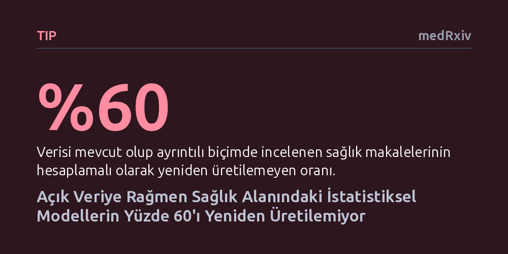

TIP · medRxiv · 2026-09-08
Araştırmacılar, sağlık alanında açık veriyle yayımlanmış makalelerdeki istatistiksel modellerin bağımsız olarak yeniden üretilip üretilemediğini test etti. İncelenen makalelerin yüzde 60'ında, eksik metodolojik açıklamalar ve eşleşmeyen değişken isimleri nedeniyle aynı sonuçlara ulaşılamadığı belirlendi.
Bir çalışmanın ham verisinin internette paylaşılmış olması, o araştırmanın istatistiksel sonuçlarının gerçekten doğrulanabilir ve güvenilir olduğu anlamına gelmez.

Bilimsel yayınlarda şeffaflığı artırmak amacıyla son yıllarda araştırmacıların ham verilerini paylaşması zorunlu ya da tavsiye edilen bir kural haline geldi. Özellikle sağlık politikalarını ve klinik kararları doğrudan etkileyen çalışmalarda, sunulan kanıtların bağımsız araştırmacılarca doğrulanabilmesi büyük önem taşır. Ancak verilerin sadece bir çevrim içi depoya yüklenmiş olması, o verilerden makaledeki tablolara giden hesaplama adımlarının tekrarlanabileceğini garanti etmemektedir.
Hesaplamalı yeniden üretilebilirlik, bağımsız bir ekibin paylaşılan ham veri ve yöntemleri kullanarak orijinal çalışmayla tıpatıp aynı sayısal sonuçlara ulaşabilmesi anlamına gelir. Eğer araştırmacılar aynı veri setiyle aynı katsayıları ve istatistiksel değerleri elde edemiyorsa, yayımlanan bulguların güvenilirliği tartışmalı hale gelir. Bu durum, açık bilim ve veri paylaşımı girişimlerinin hedeflenen güvenceyi fiilen sağlayıp sağlamadığını sorgulatmaktadır.
Araştırma ekibi, açık erişimli PLOS ONE dergisinde 2019 yılında yayımlanmış ve doğrusal regresyon yöntemi kullanmış 95 sağlık araştırmasından rastgele bir örneklem seçti. İlk olarak bu makalelerin veri paylaşım beyanları incelendi ve paylaşılan veri dosyalarının gerçekten indirilip kullanılamadığı kontrol edildi.
Veri setine fiilen erişilebilen makaleler arasından sırayla ilk 20 çalışma ayrıntılı hesaplamalı incelemeye alındı. Her bir makaleden üçer doğrusal regresyon modeli seçilerek toplam 60 model, orijinal makalede tarif edilen yöntemler ve veri temizleme adımları takip edilerek bağımsız biçimde baştan koşturuldu.
Elde edilen sonuçlar açık veri uygulamalarındaki ciddi aksaklıkları gözler önüne serdi. İncelenen 95 makaleden 68'i verisinin mevcut olduğunu bildirmesine rağmen, bunların 25'inde regresyon analizlerini tekrarlamak için gereken değişkenler fiilen eksikti. Verisine tam erişilebilen ve derinlemesine incelenen 20 makaleden ise yalnızca 8 tanesi hesaplamalı olarak tam anlamıyla yeniden üretilebildi.
İncelenen çalışmaların yüzde 60'ında aynı matematiksel sonuçlara ulaşılamadı. Yeniden üretimdeki en büyük engelin, makale metninde açıklanan değişken adları ile ham veri setindeki sütun etiketlerinin birbiriyle eşleşmemesi olduğu saptandı. Ayrıca yazarların hangi gözlemleri analiz dışı bıraktığını ya da modellere hangi değişken ayarlamalarını uyguladığını makale metninde yeterince açık anlatmaması tekrarlanabilirliği engelledi.
Elde edilen bulgular, bilimsel şeffaflık için sadece ham veriyi erişime açmanın yeterli olmadığını göstermektedir. Veri setinin değişkenlerini ve kodlama kurallarını açıklayan ayrıntılı bir veri sözlüğü ve analiz kodları bulunmadığında, paylaşılan veriler bağımsız doğrulama için kullanışsız kalmaktadır.
Araştırmacılar bu sorunun önüne geçebilmek adına, hangi analizin nerede ve hangi değişkenlerle yapıldığını gösteren standart bir model belirleme tablosunun (MLast) makalelere eklenmesini önermektedir. Analiz kodlarının ve model özelliklerinin açık depolara yüklenmesi, sağlık alanındaki bilimsel kanıtların güvenilirliğini ve denetlenebilirliğini sağlamlaştırmada kritik rol oynamaktadır.